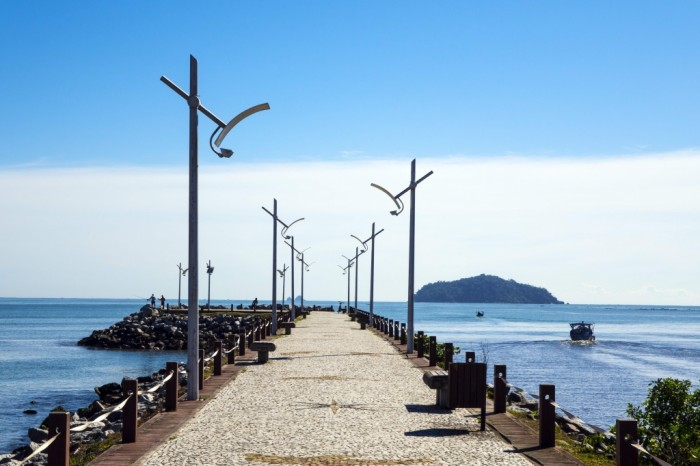
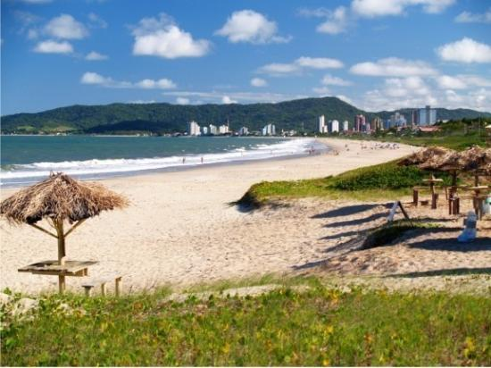
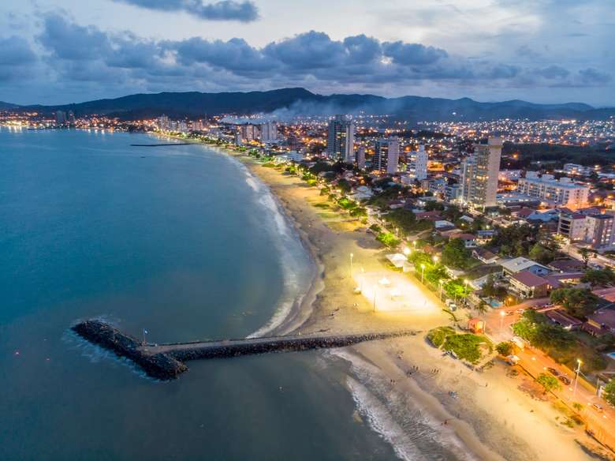

PIÇARRAS:
Piçarras é um destino que visito desde criança. Uma praia pertinho de Balneário Camboriú porém o contrário desta: menos fervo, mais areia e sol no fim de tarde (já que tem poucos prédios na beira mar). Ah e ainda fica pertinho de Penha e do Beto Carrero! Surgiu muita coisa nova na praia, que se consolidou como um dos Balneários com maior expansão em crescimento do norte catarinense  